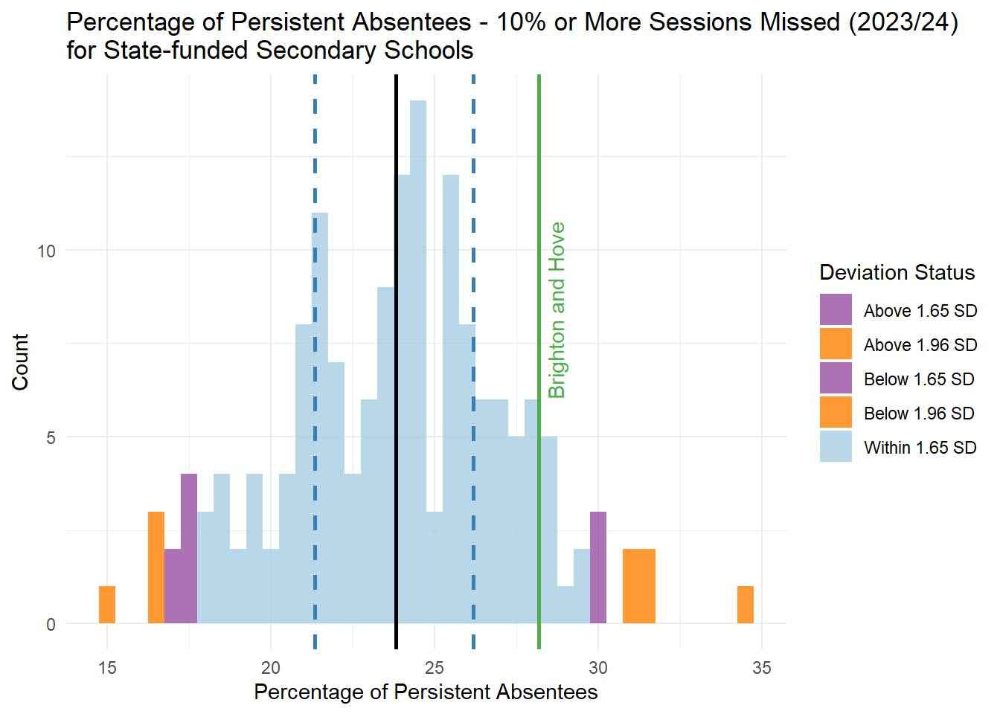
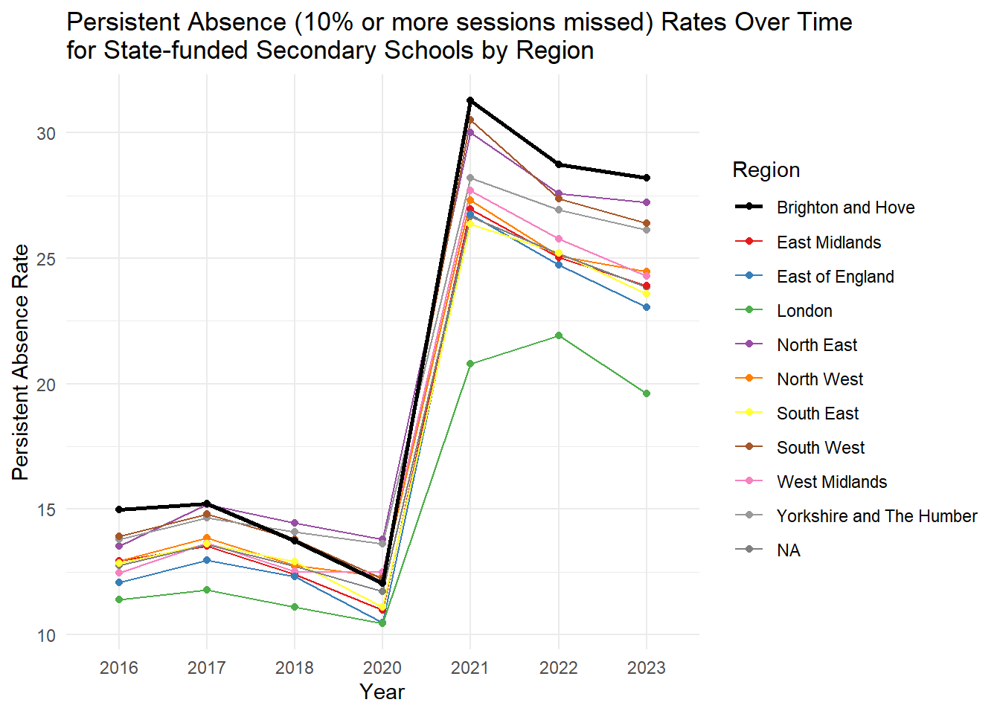
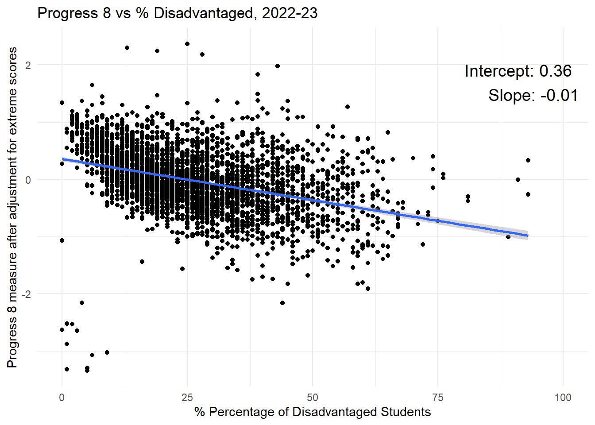
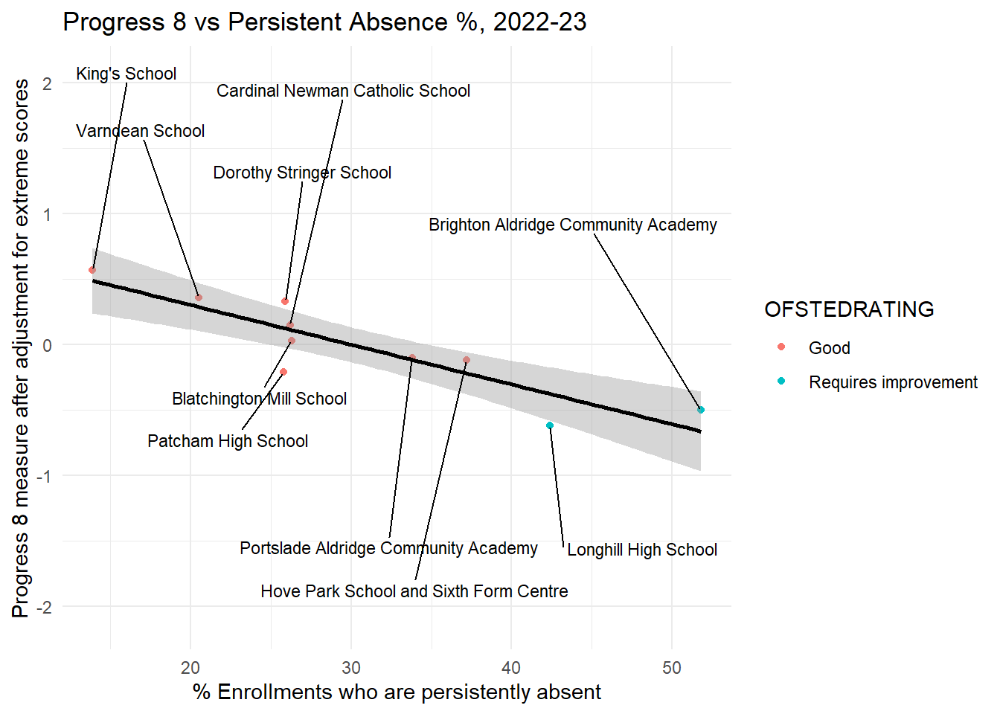

#References
#https://educationhub.blog.gov.uk/2023/05/18/school-attendance-important-risks-missing-day/
#https://www.nga.org.uk/knowledge-centre/improving-school-attendance/
#https://www.nga.org.uk/knowledge-centre/disadvantage-in-education/
#
#https://www.nfer.ac.uk/publications/being-present-the-power-of-attendance-and-stability-for-disadvantaged-pupils/
#https://www.gov.uk/government/publications/against-the-odds
##this one has the gold
#https://www.gov.uk/government/publications/against-the-odds/against-the-odds-achieving-greater-progress-for-secondary-students-facing-socio-economic-disadvantage
#
# "Our statistical models indicate that the strongest predictive factor of the progress made by pupil premium students is the school’s absence rate:[footnote 31]"
#
# "schools with lower absence rates have smaller progress gaps
# pupil premium students progress more at schools with lower absence rates
# This correlation is regardless of whether they begin with low, medium or high rates of absence."
#
# "These findings concur with previous research and we share their interpretation too, that this correlation is most likely to be causal. This is because there is an intuitive underlying causal mechanism: students not in school are less likely to learn the school curriculum.[footnote 32]"
#https://assets.publishing.service.gov.uk/media/66bf300da44f1c4c23e5bd1b/Working_together_to_improve_school_attendance_-_August_2024.pdf Let’s Talk About Absence
Absence/Attendance and Attainment?
In this piece I am going to change the focus of the conversation and look at something which has thus far been absent (excuse the pun) from any of the conversations about the school system in Brighton. The issue of absence/attendance and its importance for educational outcomes.
Improving Educational Outcomes
The Council’s premise in the very first slide shown in the engagement exercise back in October, was that Brighton and Hove has a large attainment gap and is failing its most disadvantaged pupils. Now, I have since refuted that claim here - https://adamdennett.github.io/BH_Schools_2/stain_removal.html - and shown that Brighton is not performing badly as a city and indeed is above the national median.
However, attainment and disadvantage is still an important topic for the council and is one of the main drivers behind the new consultation, so let’s stick with it for the moment. The new proposals in the consultation zoom in on disadvantage as one of the motivating factors, citing in 3.7 (supporting documents here) that they want a system that “delivers childrens’ outcomes which are good and improving especially for those at risk of disadvantage” and under 3.9 that, “the proposals put forward were designed to include: a) Better equality of outcomes – results not driven by economic advantage. b) Deliver a ‘comprehensive’ offer from our city schools as a more mixed pupil intake creates better outcomes for disadvantaged pupils.”
We can distil those statements into the following goals:
Improving Outcomes for Disadvantaged Children: The council aims to create a system that enhances and improves outcomes, particularly for children at risk of disadvantage.
Equality of Outcomes: The proposals emphasize achieving better equality in educational results, ensuring that outcomes are not influenced by economic advantage.
The assumption revealed in the last statement above, is the belief that the main route to achieving these goals is through creating a more mixed intake in schools. We know this is influenced quite heavily by some of the work of Stephen Gorard (https://theconversation.com/poorer-pupils-do-worse-at-school-heres-how-to-reduce-the-attainment-gap-205535), but where even Gorard concedes some of practical limitations of forced mixing (“Pupils could be given free transport to schools outside their immediate neighbourhood”), there might be even bigger issues. How do we know that a lack of mixing is indeed the main factor holding back disadvantaged attainment? What if it is not? And if it is not, what is more important? And if there are more important factors, might there be more effective routes to minimising disadvantged educational outcomes that could offer better or faster results, and indeed do so without the levels of disruption currently on the table?
These are very important questions to ask, not least because under the current proposals, one of the experimental treatments being prescribed by the council is forced mixing in schools through ‘busing’ significant numbers of students from some neighbouroods to schools a long way from their homes. This kind of forced mixing not only has a questionable history and efficacy in other contexts (see (Rossell 1990) and others for the US history - a very different context, but same underlying idea), but has huge financial, environmental and social implications (many of which were raised in the Parent Support Group’s latest deputation at the Labour Cabinet meeting in November) which have thus far been ignored by those pushing forward the proposals and which could do huge damage to the city.
Absence
Now at this point, you’d be forgiven for shouting “well that’s bloody obvious, I could have told you that!” - which makes it all the more surprising that it has barely surfaced in the narrative during this whole Brighton Secondary School Admissions engagement/consultation process.
I genuinely don’t know why it hasn’t, but again the rush to consultation and the lack of due care and attention and gathering of relevant evidence throughout are probably in the blame line-up.
The Evidence - the literature
I could get all academic and cite a bunch of papers and government reports, at this juncture, which detail the important role that absence/attendance plays in educational outcomes. Alright, I could and I will. For example, in a report for the Government’s Social Mobility Commission, (Riordan, Jopling, and Starr 2021) state:
“Our statistical models indicate that the strongest predictive factor of the progress made by pupil premium [disadvantaged] students is the school’s absence rate”
“schools with lower absence rates have smaller progress gaps; pupil premium students progress more at schools with lower absence rates; This correlation is regardless of whether they begin with low, medium or high rates of absence.”
“These findings concur with previous research and we share their interpretation too, that this correlation is most likely to be causal. This is because there is an intuitive underlying causal mechanism: students not in school are less likely to learn the school curriculum.”
(Claymore 2023b) (already citied above) in a paper titled: “Being Present: the Power of Attendance and Stability for Stability for Disadvantaged Pupils” states:
“On average, the association between being absent from school and KS4 outcomes is worse for disadvantaged pupils than their more affluent peers”
“Supporting secondary schools to reduce absence, improve behaviour and support within-secondary phase transfers are all key areas of policy focus to boost outcomes of disadvantaged pupils and reduce group gaps in progress and attainment.”
“over half of the gap in outcomes between disadvantaged pupils and their more affluent peers is associated with the underlying group differences in absence, exclusion and pupil transfer rates. Improving these underlying factors for disadvantaged pupils should therefore substantially boost outcomes for the group”
I could also go on to cite work by the National Governance Association (NGA 2024) on improving School Attendance, or the Department for Education’s extensive resources on why improving school attendance is important(DfE 2023) (DfE 2024).
So the literature clearly says absence is important but:
Is it important for Brighton and Hove?
Is it more or less important than social mixing or concentrations of disadvantage in the city?
Fortunately, as has been the case throughout this whole engagement/consultation exercise, data and analysis can shed some light and help us answer these questions
The Evidence - the data
#unauthorised absence
#https://explore-education-statistics.service.gov.uk/data-catalogue/data-set/be024b4d-4f91-40e4-8a58-50dc53dcc93f
##school performance
#https://www.compare-school-performance.service.gov.uk/
#from here - https://explore-education-statistics.service.gov.uk/data-catalogue/data-set/be024b4d-4f91-40e4-8a58-50dc53dcc93f
absence <- read_csv("https://explore-education-statistics.service.gov.uk/data-catalogue/data-set/be024b4d-4f91-40e4-8a58-50dc53dcc93f/csv")Rows: 5635 Columns: 59
── Column specification ────────────────────────────────────────────────────────
Delimiter: ","
chr (13): time_identifier, geographic_level, country_code, country_name, reg...
dbl (46): time_period, old_la_code, num_schools, enrolments, sess_possible, ...
ℹ Use `spec()` to retrieve the full column specification for this data.
ℹ Specify the column types or set `show_col_types = FALSE` to quiet this message.absence_meta <- as.data.frame(names(absence))
absence <- absence %>%
mutate(year = as.numeric(substr(time_period, 1, 4)))
# Filter the dataframe
absence_2022 <- absence %>%
filter(year == "2022" & !is.na(la_name) & education_phase == "State-funded secondary")
brighton_rate_2022 <- absence_2022 %>%
filter(la_name == "Brighton and Hove") %>%
pull(sess_unauthorised_percent)
library(ggplot2)
library(ggrepel)Warning: package 'ggrepel' was built under R version 4.3.3library(RColorBrewer)
library(dplyr)
# Ensure the data has necessary columns and correct types
absence <- absence %>%
mutate(year = as.factor(substr(time_period, 1, 4))) # Extract year and convert to factor
# Ensure the data has necessary columns and correct types
absence_secondary <- absence %>%
filter(education_phase == "State-funded secondary") %>%
mutate(year = as.factor(substr(time_period, 1, 4))) # Extract year and convert to factor
btn_absence_secondary <- absence_secondary %>%
filter(la_name == "Brighton and Hove")
eng_absence_secondary <- absence_secondary %>%
filter(geographic_level == "National")
medians <- absence_secondary %>%
group_by(year) %>%
summarize(median_sess_unauthorised_percent = median(sess_unauthorised_percent, na.rm = TRUE))
ggplot(absence_secondary, aes(x = sess_unauthorised_percent, fill = factor(year))) +
geom_histogram(binwidth = 0.2, color = "black", alpha = 0.4, position = "identity") +
geom_vline(data = medians, aes(xintercept = median_sess_unauthorised_percent, color = "England Median"), linetype = "solid", size = 1) +
geom_vline(data = btn_absence_secondary, aes(xintercept = sess_unauthorised_percent, color = "Brighton and Hove"), linetype = "dashed", linewidth = 1) +
facet_wrap(~ year) + # Facet by year
labs(title = "Unauthorised Absence Rates (% sessions missed) \nfor State-funded Secondary Schools by Year",
x = "Unauthorised Absence Rate",
y = "Count",
fill = "Year",
color = "") + # Change legend title
theme_minimal() +
scale_fill_manual(values = brewer.pal(10, "Set3")) + # Use Set3 palette for fill colors
scale_color_manual(values = c("England Median" = "black", "Brighton and Hove" = "blue")) + # Correct manual scale
guides(color = guide_legend(override.aes = list(linetype = c("dashed", "solid"),
shape = c(NA, NA),
size = c(1, 1))))Warning: Using `size` aesthetic for lines was deprecated in ggplot2 3.4.0.
ℹ Please use `linewidth` instead.
medians <- absence_secondary %>%
group_by(year) %>%
summarize(median_sess_overall_percent = median(sess_overall_percent, na.rm = TRUE))
ggplot(absence_secondary, aes(x = sess_overall_percent, fill = factor(year))) +
geom_histogram(binwidth = 0.2, color = "black", alpha = 0.4, position = "identity") +
geom_vline(data = medians, aes(xintercept = median_sess_overall_percent, color = "England Median"), linetype = "solid", size = 1) +
geom_vline(data = btn_absence_secondary, aes(xintercept = sess_overall_percent, color = "Brighton and Hove"), linetype = "dashed", linewidth = 1) +
facet_wrap(~ year) + # Facet by year
labs(title = "Overall Absence Rates (% sessions missed) \nfor State-funded Secondary Schools by Year",
x = "Overall Absence Rate",
y = "Count",
fill = "Year",
color = "") + # Change legend title
theme_minimal() +
scale_fill_manual(values = brewer.pal(10, "Set3")) + # Use Set3 palette for fill colors
scale_color_manual(values = c("England Median" = "black", "Brighton and Hove" = "blue")) + # Correct manual scale
guides(color = guide_legend(override.aes = list(linetype = c("dashed", "solid"),
shape = c(NA, NA),
size = c(1, 1))))
medians <- absence_secondary %>%
group_by(year) %>%
summarize(median_enrolments_pa_10_exact_percent = median(enrolments_pa_10_exact_percent, na.rm = TRUE))
ggplot(absence_secondary, aes(x = enrolments_pa_10_exact_percent, fill = factor(year))) +
geom_histogram(binwidth = 0.5, alpha = 1, position = "identity") +
geom_vline(data = medians, aes(xintercept = median_enrolments_pa_10_exact_percent, color = "England Median"), linetype = "solid", size = 1) +
geom_vline(data = btn_absence_secondary, aes(xintercept = enrolments_pa_10_exact_percent, color = "Brighton and Hove"), linetype = "dashed", linewidth = 1) +
facet_wrap(~ year) + # Facet by year
labs(title = "Persistent Absence Rates (% sessions missed) \nfor State-funded Secondary Schools by Year",
x = "Persistent Absence Rate",
y = "Count",
fill = "Year",
color = "") + # Change legend title
theme_minimal() +
scale_fill_manual(values = brewer.pal(10, "Set3")) + # Use Set3 palette for fill colors
scale_color_manual(values = c("England Median" = "black", "Brighton and Hove" = "blue")) + # Correct manual scale
guides(color = guide_legend(override.aes = list(linetype = c("dashed", "solid"),
shape = c(NA, NA),
size = c(1, 1))))
# Histogram with vertical lines and labels
# Line plot for sess_unauth_totalreasons_rate for Brighton and Hove over all values of year
absence_btn <- absence %>%
filter(la_name == "Brighton and Hove" & education_phase == "State-funded secondary") %>%
mutate(year = as.factor(substr(time_period, 1, 4))) # Extract year and convert to factor
ggplot(absence_btn, aes(x = year, y = sess_unauthorised_percent, group = 1)) +
geom_line(color = "black") +
geom_point() +
labs(title = "Unauthorised Absence Rates Over Time for Brighton and Hove",
x = "Year",
y = "Unauthorised Absence Rate") +
theme_minimal()# Line plot for sess_unauth_totalreasons_rate for Brighton and Hove over all values of year
absence_btn <- absence %>%
filter(la_name == "Brighton and Hove" & education_phase == "State-funded secondary") %>%
mutate(year = as.factor(substr(time_period, 1, 4))) # Extract year and convert to factor
filtered_data <- absence %>%
filter(education_phase == "State-funded secondary" & is.na(la_name))
ggplot() +
geom_line(data = filtered_data, aes(x = year, y = sess_unauthorised_percent, color = region_name, group = region_name)) +
geom_point(data = filtered_data, aes(x = year, y = sess_unauthorised_percent, color = region_name, group = region_name)) +
geom_line(data = absence_btn, aes(x = year, y = sess_unauthorised_percent), color = "black", group = 1, size = 1) +
geom_point(data = absence_btn, aes(x = year, y = sess_unauthorised_percent), color = "black") +
labs(title = "Unauthorised Absence Rates Over Time \nfor State-funded Secondary Schools by Region",
x = "Year",
y = "Unauthorised Absence Rate") +
theme_minimal()
# Line plot for sess_unauth_totalreasons_rate for Brighton and Hove over all values of year
absence_btn <- absence %>%
filter(la_name == "Brighton and Hove" & education_phase == "State-funded secondary") %>%
mutate(year = as.factor(substr(time_period, 1, 4))) # Extract year and convert to factor
filtered_data <- absence %>%
filter(education_phase == "State-funded secondary" & is.na(la_name))
ggplot() +
geom_line(data = filtered_data, aes(x = year, y = enrolments_pa_10_exact_percent, color = region_name, group = region_name)) +
geom_point(data = filtered_data, aes(x = year, y = enrolments_pa_10_exact_percent, color = region_name, group = region_name)) +
geom_line(data = absence_btn, aes(x = year, y = enrolments_pa_10_exact_percent, color = "Brighton and Hove"), group = 1, size = 1) +
geom_point(data = absence_btn, aes(x = year, y = enrolments_pa_10_exact_percent, color = "Brighton and Hove")) +
labs(title = "Persistent Absence (10% or more sessions missed) Rates Over Time \nfor State-funded Secondary Schools by Region",
x = "Year",
y = "Persistent Absence Rate",
color = "Region") + # Change legend title
theme_minimal() +
scale_color_manual(values = c("black", brewer.pal(9, "Set1"))) # Add black for Brighton and Hove and Set1 for regions
##Absence 2022-23 regression analysis
##All Data downloaded from here
##https://www.compare-school-performance.service.gov.uk/
#read in data for every school in the country
england_abs <- read_csv(here("data", "Performancetables_Eng_2022_23", "2022-2023", "england_abs.csv"), na = c("", "NA", "SUPP", "NP", "NE"))Rows: 21284 Columns: 5
── Column specification ────────────────────────────────────────────────────────
Delimiter: ","
chr (2): LA, ESTAB
dbl (3): URN, PERCTOT, PPERSABS10
ℹ Use `spec()` to retrieve the full column specification for this data.
ℹ Specify the column types or set `show_col_types = FALSE` to quiet this message.england_census <- read_csv(here("data", "Performancetables_Eng_2022_23", "2022-2023", "england_census.csv"), na = c("", "NA", "SUPP", "NP", "NE"))Rows: 24436 Columns: 23
── Column specification ────────────────────────────────────────────────────────
Delimiter: ","
chr (11): URN, Estab, SCHOOLTYPE, PNORG, PNORB, PSENELSE, PSENELK, PNUMEAL, ...
dbl (12): LA, NOR, NORG, NORB, TSENELSE, TSENELK, NUMEAL, NUMENGFL, NUMUNCFL...
ℹ Use `spec()` to retrieve the full column specification for this data.
ℹ Specify the column types or set `show_col_types = FALSE` to quiet this message.england_ks4final <- read_csv(here("data", "Performancetables_Eng_2022_23", "2022-2023", "england_ks4final.csv"), na = c("", "NA", "SUPP", "NP", "NE"))Warning: One or more parsing issues, call `problems()` on your data frame for details,
e.g.:
dat <- vroom(...)
problems(dat)Rows: 5812 Columns: 515
── Column specification ────────────────────────────────────────────────────────
Delimiter: ","
chr (288): SCHNAME, SCHNAME_AC, ADDRESS1, ADDRESS2, ADDRESS3, TOWN, PCODE, T...
dbl (227): RECTYPE, LEA, ESTAB, URN, CONTFLAG, ICLOSE, FEEDER, TABKS2, TAB16...
ℹ Use `spec()` to retrieve the full column specification for this data.
ℹ Specify the column types or set `show_col_types = FALSE` to quiet this message.england_school_information <- read_csv(here("data", "Performancetables_Eng_2022_23", "2022-2023", "england_school_information.csv"), na = c("", "NA", "SUPP", "NP", "NE"))Warning: One or more parsing issues, call `problems()` on your data frame for details,
e.g.:
dat <- vroom(...)
problems(dat)Rows: 25386 Columns: 26
── Column specification ────────────────────────────────────────────────────────
Delimiter: ","
chr (17): LANAME, SCHNAME, STREET, LOCALITY, ADDRESS3, TOWN, POSTCODE, SCHST...
dbl (9): URN, LA, ESTAB, LAESTAB, ISPRIMARY, ISSECONDARY, ISPOST16, AGELOW,...
ℹ Use `spec()` to retrieve the full column specification for this data.
ℹ Specify the column types or set `show_col_types = FALSE` to quiet this message.england_ks4final <- england_ks4final %>%
mutate(URN = as.character(URN)) %>%
mutate(across(TOTPUPS:PTOTENT_E_COVID_IMPACTED_PTQ_EE, ~ parse_number(as.character(.))))Warning: There were 144 warnings in `mutate()`.
The first warning was:
ℹ In argument: `across(TOTPUPS:PTOTENT_E_COVID_IMPACTED_PTQ_EE,
~parse_number(as.character(.)))`.
Caused by warning:
! 58 parsing failures.
row col expected actual
137 -- a number NEW
161 -- a number NEW
396 -- a number NEW
414 -- a number NEW
503 -- a number NEW
... ... ........ ......
See problems(...) for more details.
ℹ Run `dplyr::last_dplyr_warnings()` to see the 143 remaining warnings.england_ks4final <- england_ks4final %>%
filter(!is.na(URN))
england_abs <- england_abs %>%
mutate(URN = as.character(URN))
england_census <- england_census %>%
mutate(URN = as.character(URN))
england_school_information <- england_school_information %>%
mutate(URN = as.character(URN))
# Left join england_ks4final with england_abs
england_school_2022_23 <- england_ks4final %>%
left_join(england_abs, by = "URN") %>%
left_join(england_census, by = "URN") %>%
left_join(england_school_information, by = "URN")
data_types <- sapply(england_school_2022_23, class)
england_school_2022_23_meta <- data.frame(Field = names(data_types), DataType = data_types)#read in Brighton Secondary Schools Data
brighton_sec_schools <- read_csv("https://www.dropbox.com/scl/fi/fhzafgt27v30lmmuo084y/edubasealldata20241003.csv?rlkey=uorw43s44hnw5k9js3z0ksuuq&raw=1") %>%
clean_names() %>%
filter(la_name == "Brighton and Hove") %>%
filter(phase_of_education_name == "Secondary") %>%
filter(establishment_status_name == "Open") %>%
st_as_sf(., coords = c("easting", "northing")) %>%
st_set_crs(27700)Warning: One or more parsing issues, call `problems()` on your data frame for details,
e.g.:
dat <- vroom(...)
problems(dat)Rows: 51316 Columns: 139
── Column specification ────────────────────────────────────────────────────────
Delimiter: ","
chr (95): LA (code), LA (name), EstablishmentNumber, EstablishmentName, Type...
dbl (37): URN, EstablishmentTypeGroup (code), EstablishmentStatus (code), Ph...
lgl (7): NextInspectionVisit, TeenMothPlaces, SEN13 (name), SiteName, QABRe...
ℹ Use `spec()` to retrieve the full column specification for this data.
ℹ Specify the column types or set `show_col_types = FALSE` to quiet this message.btn_urn_list <- brighton_sec_schools %>%
select(urn) library(ggplot2)
library(ggrepel)
btn_sub <- england_school_2022_23 %>%
filter(URN %in% btn_urn_list$urn)
#P8_BANDING
library(ggplot2)
library(ggrepel)
england_school_2022_23_not_special <- england_school_2022_23 %>%
filter(MINORGROUP != "Special school")ggplot(england_school_2022_23_not_special, aes(x = P8MEA)) +
geom_histogram(binwidth = 0.1, fill = "#b3cde3", color = "black") + # Pastel color for the bars
labs(title = "Distribution of P8MEA",
x = "P8MEA",
y = "Count") +
theme_minimal()Warning: Removed 1014 rows containing non-finite outside the scale range
(`stat_bin()`).
# Order factor levels of SCHNAME.x by PERCTOT
btn_sub <- btn_sub %>%
mutate(SCHNAME.x = factor(SCHNAME.x, levels = SCHNAME.x[order(PERCTOT)]))
# Create the histogram with vertical lines using the Set3 palette
ggplot(england_school_2022_23_not_special, aes(x = PPERSABS10)) +
geom_histogram(binwidth = 1, fill = "grey", color = "black", alpha = 0.4) + # New color for the bars with added transparency
labs(title = "Percentage of Enrolments Who Are Persistent Absentees - Missing 10% \nor More of Possible Sessions Across the Full 2022/23 Academic Year - \n(All Secondary Schools England, Brighton overlaid)",
x = "Percentage of Enrolments Who Are Persistent Absentees",
y = "Count",
color = "School (ordered lowest absence)") + # Change legend title to "School"
theme_minimal() +
geom_vline(data = btn_sub, aes(xintercept = PPERSABS10, color = SCHNAME.x), linetype = "solid", linewidth = 1) + # Solid vertical lines colored by SCHNAME.x
scale_color_manual(values = brewer.pal(10, "Set3")) + # Use Set3 palette for high contrast with 10 colors
theme(legend.position = c(0.8, 0.5), # Position legend inside the plot
legend.background = element_rect(fill = "white", size = 0.5, linetype = "solid", color = "black")) Warning: The `size` argument of `element_rect()` is deprecated as of ggplot2 3.4.0.
ℹ Please use the `linewidth` argument instead.Warning: A numeric `legend.position` argument in `theme()` was deprecated in ggplot2
3.5.0.
ℹ Please use the `legend.position.inside` argument of `theme()` instead.Warning: Removed 956 rows containing non-finite outside the scale range
(`stat_bin()`).
library(ggplot2)
library(ggrepel)
library(RColorBrewer)
england_median <- median(england_school_2022_23_not_special$PERCTOT, na.rm = TRUE)
# Order factor levels of SCHNAME.x by PERCTOT
btn_sub <- btn_sub %>%
mutate(SCHNAME.x = factor(SCHNAME.x, levels = SCHNAME.x[order(PERCTOT)]))
# Create the histogram with vertical lines using the Set3 palette
ggplot(england_school_2022_23_not_special, aes(x = PERCTOT)) +
geom_histogram(binwidth = 0.5, fill = "grey", color = "black", alpha = 0.4) + # New color for the bars with added transparency
labs(title = "Percentage of Overall Absence (Authorised and Unauthorised) \nfor the Full 2022/23 Academic Year (All Secondary Schools England, Brighton overlaid)",
x = "Percentage of Overall Absence",
y = "Count",
color = "School (ordered lowest absence)") + # Change legend title to "School"
theme_minimal() +
geom_vline(data = btn_sub, aes(xintercept = PERCTOT, color = SCHNAME.x), linetype = "solid", linewidth = 1) + # Solid vertical lines colored by SCHNAME.x
scale_color_manual(values = brewer.pal(10, "Set3")) + # Use Set3 palette for high contrast with 10 colors
scale_x_continuous(breaks = seq(0, max(england_school_2022_23_not_special$PERCTOT, na.rm = TRUE), by = 2)) + # Add more numbers on the x-axis
theme(legend.position = c(0.8, 0.5), # Position legend inside the plot
legend.background = element_rect(fill = "white", size = 0.5, linetype = "solid", color = "black"))Warning: Removed 956 rows containing non-finite outside the scale range
(`stat_bin()`).
##FSM - % disadvantaged at the end of KS4
ggplot(england_school_2022_23_not_special, aes(x = PTFSM6CLA1A
)) +
geom_histogram(fill = "#b3cde3", color = "black") + # Pastel color for the bars
labs(title = "% disadvantaged at the end of KS4",
x = "% disadvantaged at the end of KS4",
y = "Count") +
theme_minimal()`stat_bin()` using `bins = 30`. Pick better value with `binwidth`.Warning: Removed 1009 rows containing non-finite outside the scale range
(`stat_bin()`).
# Base plot with england_school_2022_23
plot <- ggplot(england_school_2022_23_not_special, aes(y = P8MEA, x = PPERSABS10, colour = OFSTEDRATING)) +
geom_point() +
geom_smooth(method = "lm", se = FALSE) + # Add linear model line for england_school_2022_23
labs(title = "Progress 8 vs Persistent Absence %, 2022-23",
x = "% Enrollments who are persistently absent",
y = "Progress 8 measure after adjustment for extreme scores") +
theme_minimal()
# Add another layer with btn_sub points and labels with sticks
plot +
geom_point(data = btn_sub, aes(y = P8MEA, x = PPERSABS10), color = "black") +
geom_smooth(data = btn_sub, aes(y = P8MEA, x = PPERSABS10), method = "lm", se = FALSE, color = "black") + # Add linear model line for btn_sub
geom_text_repel(data = btn_sub, aes(y = P8MEA, x = PPERSABS10, label = SCHNAME.x), color = "black", size = 3, nudge_y = c(-1.5, 1.5), force = 10, box.padding = 0.5, max.overlaps = 10, direction = "both")`geom_smooth()` using formula = 'y ~ x'Warning: Removed 1040 rows containing non-finite outside the scale range
(`stat_smooth()`).`geom_smooth()` using formula = 'y ~ x'Warning: Removed 1040 rows containing missing values or values outside the scale range
(`geom_point()`).
ggsave(here("images","progress8_vs_persabs.png"), width = 10, height = 6, dpi = 300)`geom_smooth()` using formula = 'y ~ x'Warning: Removed 1040 rows containing non-finite outside the scale range
(`stat_smooth()`).`geom_smooth()` using formula = 'y ~ x'Warning: Removed 1040 rows containing missing values or values outside the scale range
(`geom_point()`).ggplot(england_school_2022_23_not_special, aes(y = P8MEA, x = PPERSABS10, colour = OFSTEDRATING)) +
geom_point(data = btn_sub, aes(y = P8MEA, x = PPERSABS10, colour = OFSTEDRATING)) +
geom_smooth(data = btn_sub, aes(y = P8MEA, x = PPERSABS10), method = "lm", se = TRUE, color = "black") + # Add linear model line for btn_sub
geom_text_repel(data = btn_sub, aes(y = P8MEA, x = PPERSABS10, label = SCHNAME.x), color = "black", size = 3, nudge_y = c(-1.5, 1.5), force = 10, box.padding = 0.5, max.overlaps = 10, direction = "both") + # Add linear model line for england_school_2022_23
labs(title = "Progress 8 vs Persistent Absence %, 2022-23",
x = "% Enrollments who are persistently absent",
y = "Progress 8 measure after adjustment for extreme scores") +
theme_minimal()`geom_smooth()` using formula = 'y ~ x'
library(ggplot2)
#colour = "#b3cde3"
plot <- ggplot(england_school_2022_23_not_special, aes(y = P8MEA, x = PTFSM6CLA1A, colour = OFSTEDRATING)) +
geom_point() +
geom_smooth(method = "lm", se = FALSE) + # Add linear model line for england_school_2022_23
labs(title = "Progress 8 vs Disadvantaged Student %, 2022-23",
x = "% Percentage of Disadvantaged Students",
y = "Progress 8 measure after adjustment for extreme scores") +
theme_minimal()
# Add another layer with btn_sub points and labels with sticks
plot +
geom_point(data = btn_sub, aes(y = P8MEA, x = PTFSM6CLA1A), color = "black") +
geom_smooth(data = btn_sub, aes(y = P8MEA, x = PTFSM6CLA1A), method = "lm", se = FALSE, color = "black") + # Add linear model line for btn_sub
geom_text_repel(data = btn_sub, aes(y = P8MEA, x = PTFSM6CLA1A, label = SCHNAME.x), color = "black", size = 3, nudge_y = c(-1.5, 1.5), force = 10, box.padding = 0.5, max.overlaps = 10, direction = "both")`geom_smooth()` using formula = 'y ~ x'Warning: Removed 1014 rows containing non-finite outside the scale range
(`stat_smooth()`).`geom_smooth()` using formula = 'y ~ x'Warning: Removed 1014 rows containing missing values or values outside the scale range
(`geom_point()`).ggsave(here("images","progress8_vs_disadvantage.png"), width = 10, height = 6, dpi = 300)`geom_smooth()` using formula = 'y ~ x'Warning: Removed 1014 rows containing non-finite outside the scale range
(`stat_smooth()`).`geom_smooth()` using formula = 'y ~ x'Warning: Removed 1014 rows containing missing values or values outside the scale range
(`geom_point()`).#colour = "#b3cde3"
plot <- ggplot(england_school_2022_23_not_special, aes(y = P8MEA, x = PERCTOT, colour = OFSTEDRATING)) +
geom_point() +
geom_smooth(method = "lm", se = FALSE) + # Add linear model line for england_school_2022_23
labs(title = "Progress 8 vs Overall Absence %, 2022-23",
x = "% Percentage of overall absence (authorised and unauthorised)",
y = "Progress 8 measure after adjustment for extreme scores") +
theme_minimal()
# Add another layer with btn_sub points and labels with sticks
plot +
geom_point(data = btn_sub, aes(y = P8MEA, x = PERCTOT), color = "black") +
geom_smooth(data = btn_sub, aes(y = P8MEA, x = PERCTOT), method = "lm", se = FALSE, color = "black") + # Add linear model line for btn_sub
geom_text_repel(data = btn_sub, aes(y = P8MEA, x = PERCTOT, label = SCHNAME.x), color = "black", size = 3, nudge_y = c(-1.5, 1.5), force = 10, box.padding = 0.5, max.overlaps = 10, direction = "both")`geom_smooth()` using formula = 'y ~ x'Warning: Removed 1040 rows containing non-finite outside the scale range
(`stat_smooth()`).`geom_smooth()` using formula = 'y ~ x'Warning: Removed 1040 rows containing missing values or values outside the scale range
(`geom_point()`).
plot <- ggplot(england_school_2022_23_not_special, aes(y = PTFSM6CLA1A, x = PERCTOT, colour = OFSTEDRATING)) +
geom_point() +
geom_smooth(method = "lm", se = FALSE) + # Add linear model line for england_school_2022_23
labs(title = "FSM % vs Overall Absence %, 2022-23",
x = "% FSM/Disadvantaged",
y = "% Percentage of overall absence (authorised and unauthorised)") +
theme_minimal()
plot`geom_smooth()` using formula = 'y ~ x'Warning: Removed 1037 rows containing non-finite outside the scale range
(`stat_smooth()`).Warning: Removed 1037 rows containing missing values or values outside the scale range
(`geom_point()`).
cor <- cor(england_school_2022_23_not_special$PTFSM6CLA1A, england_school_2022_23_not_special$PERCTOT, use = "complete.obs")
cor[1] 0.4796396## regression model
library(gglm)Warning: package 'gglm' was built under R version 4.3.3library(car)Warning: package 'car' was built under R version 4.3.2Loading required package: carDataWarning: package 'carData' was built under R version 4.3.2
Attaching package: 'car'The following object is masked from 'package:purrr':
someThe following object is masked from 'package:dplyr':
recode# Create a linear model
model <- lm(P8MEA ~ PPERSABS10 + PTFSM6CLA1A + OFSTEDRATING, data = england_school_2022_23_not_special)
vif_values <- car::vif(model)
vif_values GVIF Df GVIF^(1/(2*Df))
PPERSABS10 1.658914 1 1.287989
PTFSM6CLA1A 1.363978 1 1.167895
OFSTEDRATING 1.289714 4 1.032314summary(model)
Call:
lm(formula = P8MEA ~ PPERSABS10 + PTFSM6CLA1A + OFSTEDRATING,
data = england_school_2022_23_not_special)
Residuals:
Min 1Q Median 3Q Max
-3.7535 -0.2208 -0.0094 0.2124 2.1557
Coefficients:
Estimate Std. Error t value Pr(>|t|)
(Intercept) 0.8127999 0.0223819 36.315 < 2e-16 ***
PPERSABS10 -0.0278268 0.0008790 -31.656 < 2e-16 ***
PTFSM6CLA1A -0.0034151 0.0004973 -6.868 7.82e-12 ***
OFSTEDRATINGOutstanding 0.3773034 0.0186961 20.181 < 2e-16 ***
OFSTEDRATINGRequires improvement -0.2537387 0.0193055 -13.143 < 2e-16 ***
OFSTEDRATINGSerious Weaknesses -0.2433692 0.0542185 -4.489 7.42e-06 ***
OFSTEDRATINGSpecial Measures -0.3612652 0.0651939 -5.541 3.25e-08 ***
---
Signif. codes: 0 '***' 0.001 '**' 0.01 '*' 0.05 '.' 0.1 ' ' 1
Residual standard error: 0.3447 on 3166 degrees of freedom
(1102 observations deleted due to missingness)
Multiple R-squared: 0.5635, Adjusted R-squared: 0.5627
F-statistic: 681.3 on 6 and 3166 DF, p-value: < 2.2e-16gglm(model)
References
Claymore, Zoe. 2023a. “Being Present: The Power of Attendance and Stability for Disadvantaged Pupils.” https://www.nfer.ac.uk/publications/being-present-the-power-of-attendance-and-stability-for-disadvantaged-pupils/.
———. 2023b. “Being Present: The Power of Attendance and Stability for Disadvantaged Pupils.” https://www.nfer.ac.uk/publications/being-present-the-power-of-attendance-and-stability-for-disadvantaged-pupils/.
DfE. 2023. “Why Is School Attendance so Important and What Are the Risks of Missing a Day? The Education Hub.” https://educationhub.blog.gov.uk/2023/05/18/school-attendance-important-risks-missing-day/.
———. 2024. “Working Together to Improve School Attendance.” https://www.gov.uk/government/publications/working-together-to-improve-school-attendance.
NGA. 2024. “Improving School Attendance | National Governance Association.” https://www.nga.org.uk/knowledge-centre/improving-school-attendance/.
Riordan, S, M Jopling, and S Starr. 2021. “Against the Odds: Achieving Greater Progress for Secondary Students Facing Socio-Economic Disadvantage.” https://www.gov.uk/government/publications/against-the-odds.
Rossell, Christine H. 1990. The Carrot or the Stick for School Desegregation Policy: Magnet Schools or Forced Busing. Temple University Press. https://www.jstor.org/stable/j.ctt14bt4t1.